① 고퀄리티 한국식한국 대기업 디자인 에이전시가 만든 듯한
검은 바위에서
미래를 캡니다
태백은 탄광의 검은 돌을 자원으로, 강릉은 세라믹을 반도체 부품으로 바꿉니다. 강원테크노파크는 6개 시군 15개 시설에서 강원의 다음 산업을 키웁니다.
한 줄의 근거
거친 땅과 검은 바위 속에서 우리는 희망을 캐내고
강원테크노파크 2026 홍보영상 첫 장면(0:01~0:04)강원의 땅 위에 새로운 심장이 뛰기 시작합니다
같은 영상 0:13~0:16태백 권역 경석자원 특화 / 강릉 세라믹 특화(세라믹신소재 산업)
누리집 TP소개 > 일반현황 '강원테크노파크 시설현황' 그림, 같은 영상 1:00 자막반도체 부재용 대형 세라믹 제품 제조 지원
같은 영상 1:57~2:00 자막
그 회사만의 한 장

무엇으로 어떻게 만들었나
- 두뇌 서버에서 Gemini 3 Pro Image로 연간보고서용 정물 사진을 찍듯 생성했습니다. 반으로 자른 검은 돌(탄광 경석), 그 돌을 간 회색 가루, 반도체 장비에 들어가는 흰 세라믹 링 세 가지입니다.
- 빛 규칙을 하나로 묶었습니다. 왼쪽 위 45도의 큰 소프트박스 하나, 100mm 접사 렌즈 f/11, 무광 재질, 숯빛 종이 배경입니다. 빛 번짐·반사·광택은 금지했습니다.
- PC용 가로 사진을 고른 뒤, 그 사진을 다시 넣어 폰용 세로 사진으로 구도만 바꿨습니다. 그래서 폰에서도 같은 사물이 화면 위 60%를 채웁니다.
- 조명 기구가 사진에 비친 2장은 버리고 다시 생성했습니다.
- 실제 시설·사람은 넣지 않고 사물·재료만 생성했습니다. 화면 라벨도 '태백 경석'이 아니라 '검은 돌'로 써서 실제 표본 사진처럼 보이지 않게 했습니다.
생성 12회(첫 화면 4회, 사물 8회) 중 8장 사용, 약 2,300원
주요 사업 분야 사물 세트
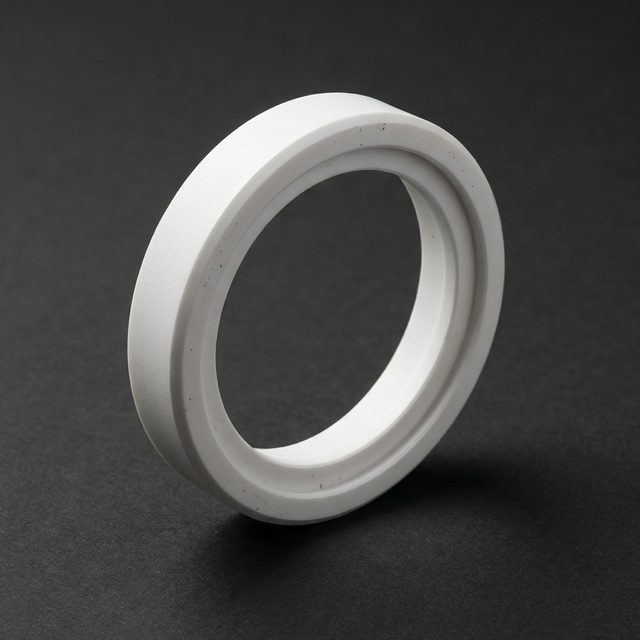
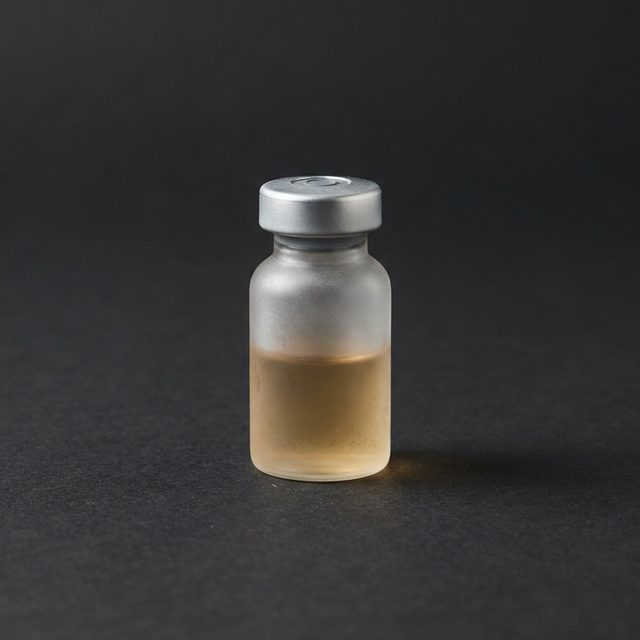
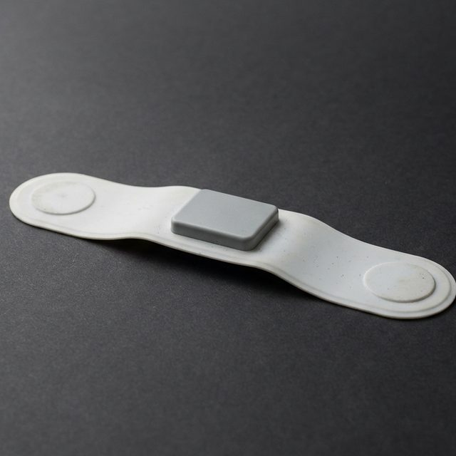
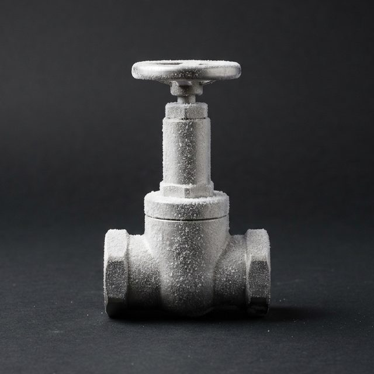
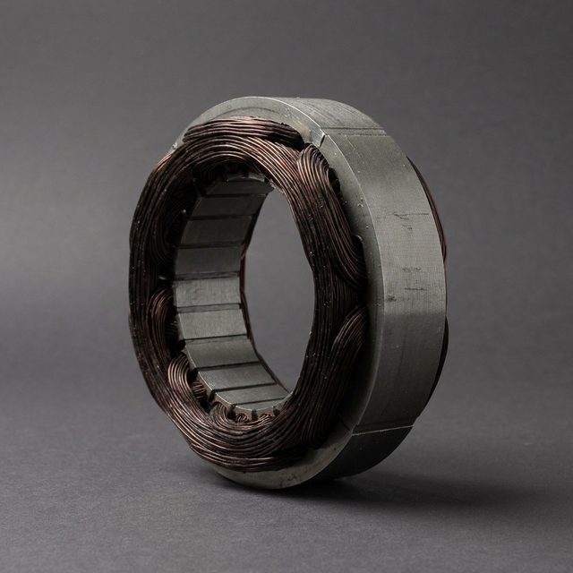
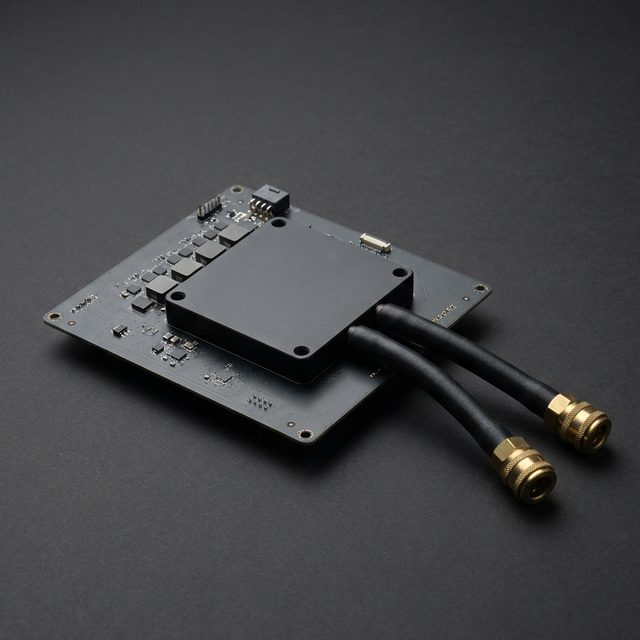
서체와 색
검은 바위에서
지금 접수 중인 공고 12건
- 경석 검정#161718바탕·공고 띠
- 숯빛 종이#2D2D2F사진 바탕과 이어지는 면
- 세라믹 흰색#F3F3F1제목·글자
- 돌 회색#A3A5A8보조 글자
- 강원TP 빨강#E60934마감 7일 이내 D-day 바탕만(흰 글자와 대비 4.7:1)
지난 3안과 나란히
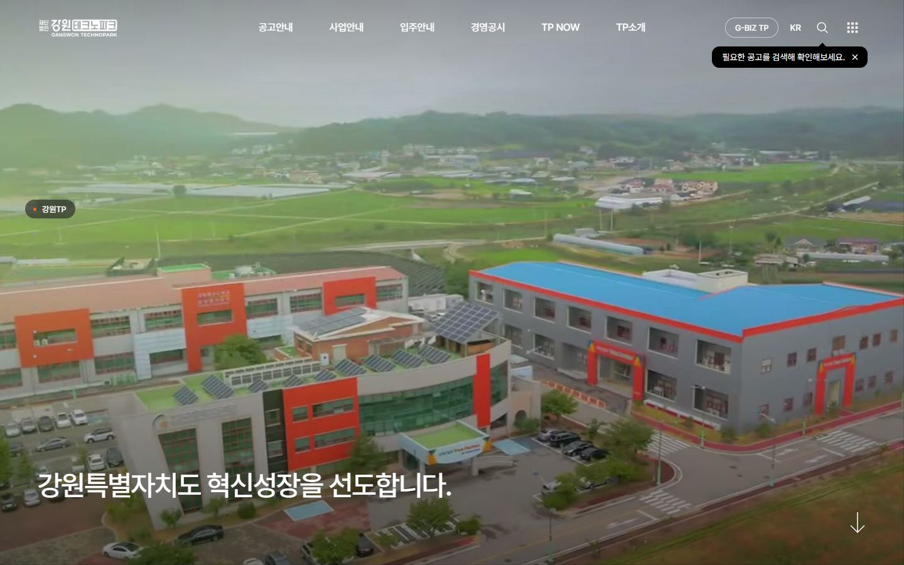
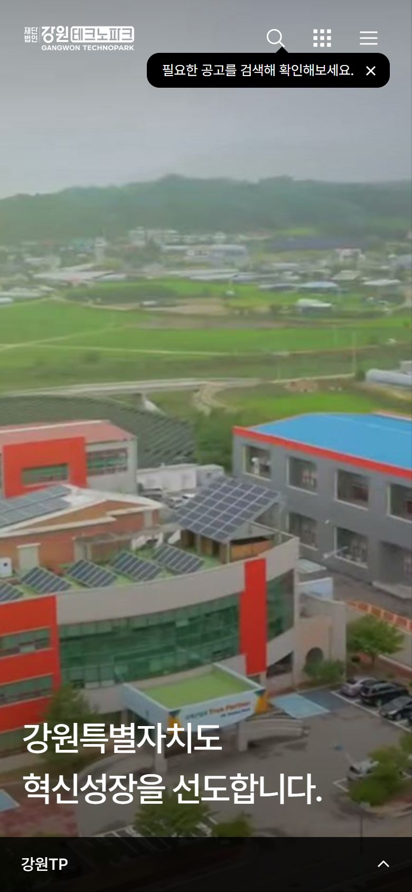

만들기 전에 적은 계획과 자기검토
PC는 숯빛 정물 사진 한 장이 화면 위 70%를 덮고, 왼쪽 위에 두 줄 초대형 제목, 오른쪽에 바위·가루·세라믹 링, 왼쪽 아래에 한 문장, 맨 아래 검은 띠에 접수 중 공고 3건을 둡니다. 폰과 데스크톱 보기는 세로 사진이 화면 위 60% 이상을 채우고, 사진 아래 빈 종이 위에 제목을 얹습니다.
- 빛 규칙 하나: 모든 사물을 같은 빛, 같은 렌즈, 같은 종이 위에서 찍습니다.
- 색은 사물에서 뽑습니다: 바위 검정, 세라믹 흰색, 돌 회색. 빨강은 강원TP CI 그대로, 마감 임박 한 곳에만 씁니다.
- 글자는 크게, 적게 씁니다: 제목 두 줄, 문장 하나, 라벨 세 개.
대담함을 쓴 한 곳 정물 사진의 크기(PC 화면의 70%, 폰 화면의 60%)
"비슷한 다른 고객에게도 똑같이 냈을 계획인가?"
검은 배경 위 제품 정물에 큰 제목. 다른 대기업 소재 회사에도 똑같이 냈을 공식 아닌가?
사물을 아무 소재가 아니라 강원TP만의 연결(태백 경석자원 특화의 검은 돌, 원료 가루, 강릉 세라믹 특화의 반도체용 링)로 골랐고, 한 줄도 강원TP 2026 홍보영상 첫 문장에서 가져왔습니다.
빨간 포인트색은 흔한 대기업 문법 아닌가?
빨강은 새로 고른 색이 아니라 강원TP CI 빨강 #E60934 그대로이고, 마감 7일 이내 D-day 한 곳에만 씁니다.
사물 세트를 아무 기관의 '첨단산업 아이콘'으로 냈을까?
여섯 사물을 강원TP 실제 사업에서 골랐습니다. 서리 앉은 액화수소 밸브(삼척), 심전도 패치(원주), 소양강댐 냉수 데이터센터의 수랭 모듈(춘천)입니다.
참고한 곳
틀은 가져오지 않고, 그 회사가 '한 장'을 무엇으로 어떻게 만들었는지만 봤습니다.
- 이모션글로벌, OCI회사의 소재를 접사 정물 사진으로 찍어 첫 화면 한 장으로 쓴 방식. 우리는 강원 땅의 돌과 세라믹을 같은 빛 규칙으로 찍었습니다.
- 더즈인터랙티브, 한화에어로스페이스그 회사만을 위해 만든 오브젝트 한 장과 짧은 한 줄만 첫 화면에 두고 나머지는 아래로 미루는 순서.
- 페이브, 한화오션사물 옆을 화면 폭의 절반에 가까운 큰 글자가 차지하는 비례.
② 독창형한국·해외 상관없이 눈에 띄는 독창적인
청정 자연 위에
첨단을 더하다
강원테크노파크는 6개 시군 15개 시설에서 반도체, 바이오, 디지털헬스, 수소, 모빌리티, AI 기업을 키웁니다.
한 줄의 근거
청정 자연이라는 고유한 자산 위에 첨단산업을 더해, 기업이 마음껏 혁신하고 청년이 강원에서 꿈을 펼치는 산업 생태계를 만들고자 합니다.
강원TP 누리집 TP소개 > 인사말 > 이사장 인사말반도체, 바이오, 디지털헬스, 수소, 모빌리티, AI 등 첨단산업 분야의 생태계를 조성하며 지역경제 발전을 선도하고 있습니다.
강원TP 누리집 TP소개 > 인사말 > 원장 인사말바이오특화(춘천) / 항체의약품소재 특화(홍천) / 디지털헬스케어 특화(원주) / 세라믹 특화(강릉) / 액화수소 특화(삼척) / 경석자원 특화(태백)
강원TP 누리집 TP소개 > 일반현황 그림 '강원테크노파크 시설현황'
그 회사만의 한 장

무엇으로 어떻게 만들었나
- 강원 땅의 실제 고도 자료(AWS 지형 타일 줌 10, 56장, 한 칸 약 240m)를 받아 부드럽게 다듬고, 통계청 시군 경계로 강원특별자치도 모양 그대로 잘라냈다.
- 높이는 2.8배로 키워 백두대간 등줄기와 큰 골짜기가 읽히게 하고, 웹 3D(three.js)로 무광 모형을 만들어 북서쪽 낮은 각도(32도) 한 방향 빛으로 찍었다.
- 잘린 옆면은 빛 계산 없이 평평한 색 띠 다섯 겹(초록 겉흙, 회색 바위, 검은 탄층, 밝은 사암, 짙은 기반암)으로 수평하게 이었다. 검은 탄층은 태백 경석자원 특화로 이어지는 강원 땅의 이야기다.
- PC는 북쪽이 위, 동해안이 오른쪽 변이 되는 남쪽 52도 시점, 폰은 세로 화면을 채우게 30도 돌린 58도 시점으로 따로 구웠다. 바닥 그림자는 모형 실루엣을 흐려 깔았다.
- 여섯 거점(춘천, 홍천, 원주, 강릉, 삼척, 태백) 위치를 같은 카메라로 화면 좌표로 계산해 지시선과 이름표를 얹었다(위치는 시설 주소의 시군 기준).
그림 생성 0회 · 0원 (실제 고도 자료로 코드 렌더)
주요 사업 분야 사물 세트
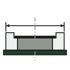
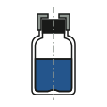
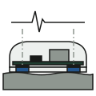
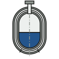
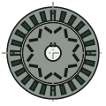
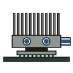
서체와 색
청정 자연 위에
6개 시군 15개 시설에서 기업을 키웁니다
D-32
- 안개#EDF0EE바탕(모형 사진 바탕과 같은 값으로 이어 붙임)
- 산 초록#1F3D30제목 글자, 버튼, 지형 윗면 계열
- 지층 회색#8E9690옆면 지층, 단면도의 금속·바위
- 탄층 검정#191A19본문 글자, 지시선, 검은 탄층
- 동해 파랑#24558CD-day 숫자, 링크, 단면도의 액체·냉수
지난 3안과 나란히
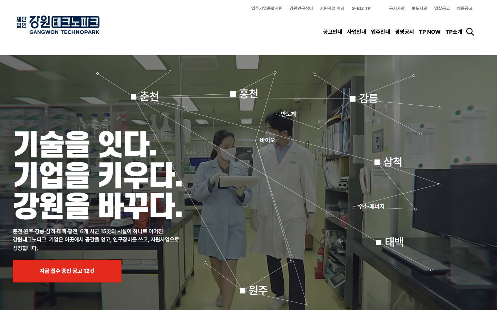

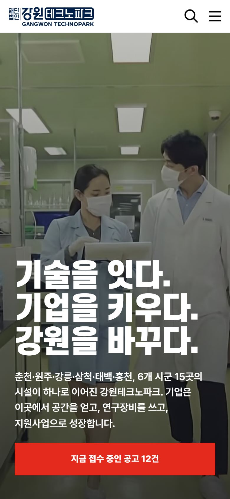
만들기 전에 적은 계획과 자기검토
PC는 안개 바탕 위 화면 오른쪽 약 3분의 2를 강원 지형 모형 한 장이 차지하고(여섯 거점 지시선), 왼쪽 위에 두 줄 초대형 제목, 왼쪽 아래에 보조 문장과 공고 버튼, 첫 화면 아래 흰 띠에 접수 중 공고 4건. 폰·데스크톱 보기는 머리글 바로 아래 모형을 폭 가득 크게, 그 아래 제목·보조 문장·공고.
- 실제 고도·실제 경계로만 만든다(지어낸 지형 금지)
- 무광·한 빛·평평한 색면, 옆면 지층은 빛 계산 없는 평평한 색 띠
- 지시선 1.5px, 이름표 15px 이상, 이름표 바탕은 안개색으로 지형 위에서도 읽히게
대담함을 쓴 한 곳 지형 모형의 크기 한 곳(PC 화면 약 3분의 2, 폰 화면의 70%)
"비슷한 다른 고객에게도 똑같이 냈을 계획인가?"
강원 지형 덩어리는 강원관광재단이나 강원도청에 내도 똑같지 않나?
지형 위에 강원TP 시설현황 그림의 6개 권역 특화를 지시선으로 박고, 잘린 면의 검은 탄층을 태백 경석자원 특화와 이어 '검은 땅에서 첨단으로'를 강원TP 이야기로 만들었다. 사물 세트도 강원TP 실제 사업 사물(세라믹 링, 액화수소 탱크, 냉수 냉각 AI 모듈)만 그렸다.
SUIT 굵은 큰 제목 + 연한 바탕은 어느 기관이든 쓰는 조합 아닌가?
제목 글자색을 지형과 같은 산 초록으로 묶어 그림과 글자가 한 덩어리로 읽히게 하고, 페이지 바탕을 모형 사진 바탕과 같은 값으로 이어 붙여 모형이 화면 위에 놓인 것처럼 보이게 했다.
참고한 곳
틀은 가져오지 않고, 그 회사가 '한 장'을 무엇으로 어떻게 만들었는지만 봤습니다.
- 페이브 — LX 트렌드십그 브랜드만의 오브젝트 하나를 무광 3D로 크게 만들어 첫 화면을 채운 방식 → 강원 땅 자체를 무광 모형 한 덩어리로
- 더즈인터랙티브 — 한화에어로스페이스회사의 세계(지구·위성)를 직접 만든 3D 한 장으로 보여 준 방식 → 강원TP의 세계(6개 권역)를 실제 고도 자료로
③ 실용형실제로 쓰기 편한
춘천 바이오부터
삼척 액화수소까지
강원 6개 시군 15개 시설에서, 우리 회사가 지금 신청할 수 있는 지원을 찾으세요.
한 줄의 근거
바이오특화(춘천), 항체의약품소재 특화(홍천), 디지털헬스케어 특화(원주), 세라믹 특화(강릉), 액화수소 특화(삼척), 경석자원 특화(태백)
강원TP 누리집 TP소개 > 일반현황, '강원테크노파크 시설현황' 그림(괄호 속 시군은 그림에서 각 특화가 놓인 자리)지역 특성에 부합하는 산업 발전 전략과 정책을 수립하고 기업의 성장 단계에 맞춘 지원을 제공하는 ‘지역혁신 거점기관’입니다.
강원TP 누리집 TP소개 > 인사말 > 원장 인사말
그 회사만의 한 장
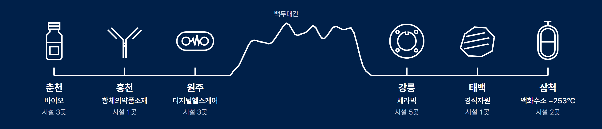
무엇으로 어떻게 만들었나
- 여섯 거점은 시설현황 그림의 권역 특화 그대로 고르고, 실제 경도 순서(춘천 동경 127.7도 → 삼척 129.2도)대로 흰 선 하나에 놓았다.
- 영서 세 곳과 영동 세 곳 사이의 산은 원주–강릉 직선 위 실제 고도 240점(공개 지형 타일, 이 선 위 최고 약 1,050m)을 재서 부드럽게 다듬은 선이다. 지어낸 산 모양이 아니다.
- 사물 그림 8개는 64칸 격자 위에 선 굵기 하나, 각진 끝, 채움 없음으로 좌표를 직접 짜서 그렸다. 기성 아이콘 팩은 쓰지 않았다.
- 폰에서는 같은 선이 'ㄹ'자로 꺾여 세 곳씩 두 줄이 되고, 꺾이는 가운데 줄이 그대로 백두대간이 된다. 가로로 밀 필요가 없다.
- 거점을 누르면 시설현황으로 가고, 아래 공고 목록은 강원TP 공고 45건 자료로 여는 날짜 기준 D-day를 계산한다. 검색칸은 실제로 공고와 시설을 찾는다.
생성 0회·0원 — 전부 코드로 그린 선 그림, 고도는 공개 지형 자료
주요 사업 분야 사물 세트
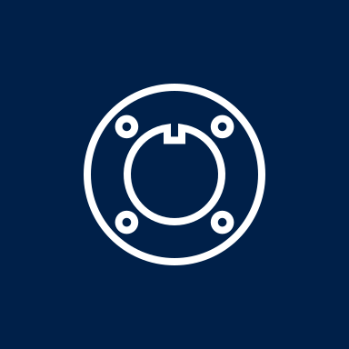
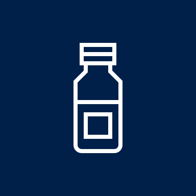
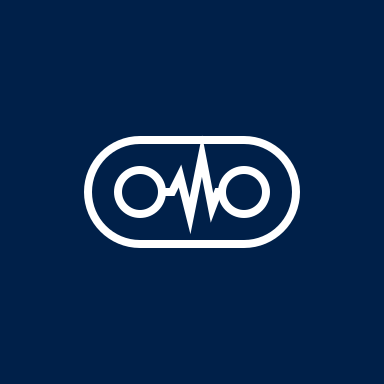
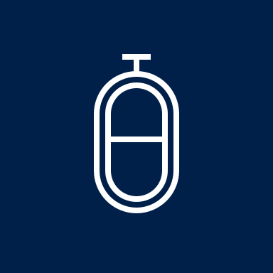
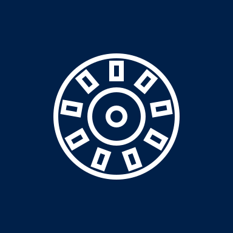
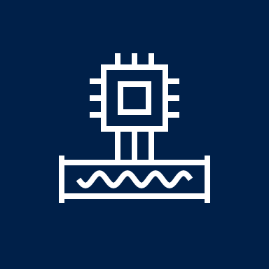
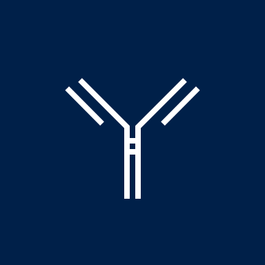
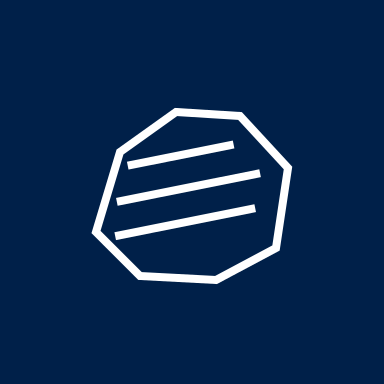
서체와 색
춘천 바이오부터
우리 회사가 지금 신청할 수 있는 지원
D-32
- 강원TP 남색#002049첫 화면 면 전체(로고 남색 그대로)
- 흰 선#FFFFFF선 그림과 제목 글자
- 연회색#F2F4F7공고 목록 면
- 먹색#111827본문 글자
- 강원TP 빨강#E60934마감 7일 이내 D-day 한 곳만(흰 글자 4.7:1)
- 링크 파랑#1F5BD7전체 보기 링크
지난 3안과 나란히
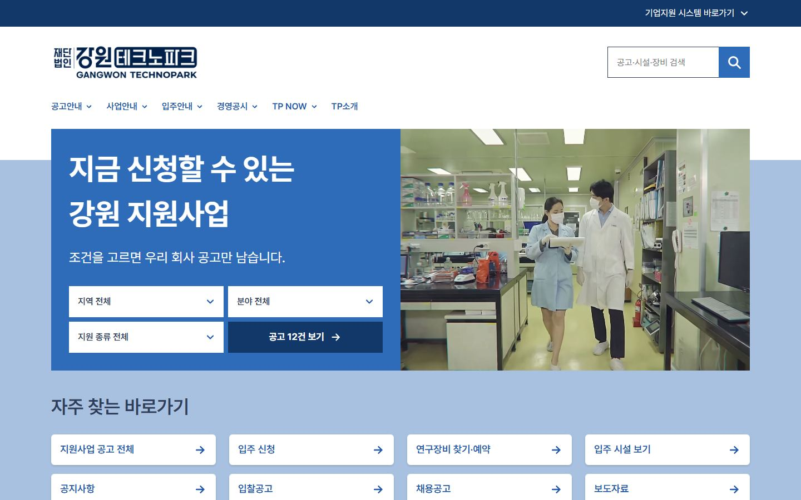

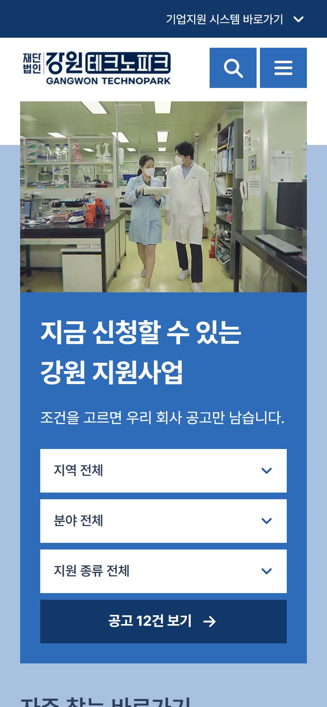

만들기 전에 적은 계획과 자기검토
PC(1024px 이상)는 머리글 아래 화면 위쪽 약 57%를 강원TP 남색 면으로 채우고 왼쪽 위 두 줄 제목, 그 아래 서→동 한 줄 위 여섯 거점 그림을 두며, 아래는 흰 바탕에 검색칸과 접수 중 공고 D-day 4건. 폰과 데스크톱 보기(1023px 이하)는 'ㄹ'자 두 줄 — 같은 선이 꺾여 세 곳씩 두 줄이 되고 그림·글자가 화면 폭에 맞춰 커지며(남색 면 980×2120에서 1,097px, 768×1024에서 84%, 390×844에서 77%), 그 아래 검색과 D-day.
- 그림은 장식이 아니라 길 찾기 — 여섯 거점이 곧 지역 고르기
- 선 한 굵기·채움 없음·흰 선 하나로 통일, 산도 실제 고도로만
- 빨강은 마감 임박 한 곳만, 나머지는 남색·흰색·연회색
대담함을 쓴 한 곳 남색 면 위 서→동 한 줄(가운데 백두대간은 실제 고도)
"비슷한 다른 고객에게도 똑같이 냈을 계획인가?"
남색 면 + 흰 선 아이콘 + D-day 목록은 어느 공공기관에도 냈을 것 아닌가?
그림을 강원TP 6개 권역 특화 사물(영하 253도 액화수소 탱크·세라믹 링·경석)로만 그리고, 실제 경도 순서로 선 하나에 이어 '춘천에서 삼척까지'라는 한 줄과 그림이 같은 말을 하게 했다. 영서와 영동 사이에는 실제 고도로 그린 백두대간을 넣어 강원에서만 나오는 선이 되게 했다.
Pretendard 기본 설정은 누구나 쓰는 것 아닌가?
제목 66px·800과 본문 17px의 큰 위계, D-day를 고정폭 숫자로 크게 세워 글자 크기만으로 무엇을 먼저 볼지 정했다(플러스엑스식 글자 위계).
참고한 곳
틀은 가져오지 않고, 그 회사가 '한 장'을 무엇으로 어떻게 만들었는지만 봤습니다.
- 플러스엑스장식 없이 글자 크기 차이 하나로 위계를 세우는 방식
- 더즈인터랙티브 기관 사이트첫 화면 바로 아래에 실무(공고·바로가기) 띠를 붙이는 방식